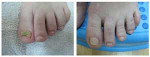

Otthoni elsősegélykészlet
Egészség és szépség – népi gyógymódok
REJTETT VESZÉLY: TUDJA MEG A SZÖRNYŰ IGAZSÁGOT A GOMBÁRÓL, MIELŐTT ELVESZÍTENÉ A KÖRMEIT!

Üdv! A nevem Zsuzsanna, és Kőszegen lakom.
Három évvel ezelőtt a férjem elkapott egy látszólag veszélytelen betegséget, amelynek neve körömgomba!
Sok ember szenved a körömgomba enyhébb formájától és még csak nem is tud róla!
A lehetséges következményekkel sincsenek tisztában. Azonban tapasztalataink alapján kijelenthetjük, hogy ezek a következmények IJESZTŐEK.
Minden olyan ártatlanul kezdődött, hogy nem is foglalkoztunk vele!
A gombafertőzés bármikor kialakulhat. Stressz, közönséges nátha, legyengült immunrendszer. A férjem esetében is ugyanígy volt. Megfázott, és egy héttel később felfedeztük az első TÜNETEKET:
- A lábai elkezdtek dagadni, főleg, amikor vízbe rakta őket
- Hámlani kezdett a bőre
- A lába büdös lett
- A lábujjkörme megsárgult és az ujja elkezdett fájni.

A férjem lábai a gyógyszertári kenőcsök használata után
HA VALAHA IS ÉSZREVETT MÁR HASONLÓ TÜNETEKET, NE KERESSEN KIFOGÁSOKAT – EZ AZ ESETEK 95%-BAN AZT JELENTI, HOGY ÖNNEK GOMBÁJA VAN, ÉS AZONNAL CSELEKEDNIE KELL!
A férjem nem cselekedett azonnal – de én már gondoltam a lehetséges következményekre, és bekentem szalicilsavas kenőccsel a lábkörmeit.
"Nagyanyáink ezt használták, tehát lehet, hogy használ!"
Ez a "lehetséges" kezelés nem vált be nála, és egy idő után magánklinikára kellett mennie. Teljesen eltávolították a körömlemezét.

18+
Azt hiszik, használt?
Egy évvel később teljesen visszanőtt a körme, de a gomba csak még rosszabb lett !
A körmei úgy néztek ki, mint egy rakás trágya. Majdnem elhánytam magam, amikor megláttam, de ő még rosszabbul érezte magát miatta. A lába irtózatosan büdös volt. SEMMILYEN MÓDSZER NEM SEGÍTETT – egyetlen dolgot javasoltak, hogy távolíttassa el a körmét ismét.
Mi értelme van, ha a gomba mindig kiújul?
Megmondom egyenesen.
A GYÓGYSZERTÁRAKBAN NEM KAPHATÓ OLYAN KÉSZÍTMÉNY, AMELY HATÁSOS LENNE A GOMBA ELLEN.
Ezek a termékek csupán elfedik a tüneteket vagy csak "ideiglenesen elnyomják" azokat, de egy kis idő elteltével a fertőzés kiújul. Megmutatom az igazságot az összes ilyen termékről, amelyeket a férjemnek felírtak. Egy vagyont költöttünk ezekre a termékekre, de SEMMIT SEM ÉRT
A lehetőség – szisztémás készítmények
"Elpusztítják" a gombát, de azt senki nem mondja el nekünk, milyen gyorsan teszik tönkre a májat is!
Tulajdonképpen ezek a készítmények olyanok, mint a patkányméreg, amely megmérgezi a szervezetünket – csak kisebb dózisokban alkalmazva.
B lehetőség – cseppek és lakkok
Azt gondoltam, hogy ez lesz az egyetlen megoldás a férjem számára, de aztán kialakult nála egy RETTENETES ALLERGIÁS REAKCIÓ. Mint kiderült, ez egyáltalán nem szokatlan, ugyanis ahogy valaki elkezd egy gombaölő készítményt alkalmazni a lábán, a szervezet toxikus mérgezést kap. Egyesek egyszerűen érzékenyebbek, míg mások tovább bírják.
Olvastam cikkeket az interneten és beszéltem gombafertőzéstől szenvedő emberekkel. A legtöbbüknek ugyanilyen allergiás reakciója volt, mint a férjemnek, MÉGIS MÉG MINDIG ÁRULJÁK EZEKET A TERMÉKEKET!!!
Amíg ezeket a készítményeket használtuk, a férjemnek antihisztamint is szednie kellett szakértői javaslatra, aminek az eredménye az lett, hogy kórházba került mérgezéssel! Hála Istennek minden jól végződött, de nem segítettek nekünk a gomba elleni harcban. Azt javasolták, hogy újra próbáljuk ki a népi gyógymódokat!
Népi gyógymódok! Egy pasinak, akinek így néz ki a körme! És ez a 21 századi egészségügy.

18+
A férjem nem bírta tovább elviselni a fájdalmat, ezért saját maga szedte le a körömlemezt.
Történetünk nem egyedi. Sok embert láttam a magánklinikán kéz- és lábgombával! Sőt, ezek között voltak férfiak és nők, fiatalok és öregek egyaránt.
HOGYAN LEHET MEGSZABADULNI A GOMBÁTÓL?
Az elejétől fogva tudtam, hogy rajtam kívül senki sem fog segíteni a férjemnek. Rengeteg információt elolvastam a gombásodásról és egy ponton elkezdtem információkat keresni a gombafertőzés stádiumairól az Interneten és arról, hogyan lehet leküzdeni a CIVILIZÁLT világban.
Kiderült, hogy a fejlett országok egy BIZTONSÁGOS gombaellenes terméket használnak, a . A piacon kapható leghatékonyabb gombaellenes terméknek tartják. Nem importálják az országba (természetesen a gyógyszerlobbi elárasztotta az összes gyógyszertárat a hatástalan és káros termékeivel).
Részletesen tanulmányoztam az összes kutatást, esettanulmányt és felmérést, és arra a következtetésre jutottam, hogy ennek a készítménynek számos hatása van:
- Segít elpusztítani minden ismert és káros gombát.
- Segít megszüntetni a viszketést, a fájdalmat és az irritációt.
- 100%-os hatékonysággal fertőtlenít.
- Segít lokalizálni a gyulladást (ami megakadályozza a fertőzés terjedését).
- Segíti a fertőzés által károsodott sejtek helyreállítását.
- Segít megszüntetni a fertőzés okozta szagot.
- A bőr jól táplált, ami megkönnyíti a fertőzés elleni küzdelmet.
A ról BŐVEBB INFORMÁCIÓ ITT TALÁLHATÓ >>> Hivatalos weboldal
Az összetevők a gombaellenes készítményben GARANTÁLJÁK a teljes biztonságot. A készítménynek nincs mellékhatása! Kizárólag természetes összetevőket tartalmaz, amelyek kölcsönösen erősítik egymást. Ez a kombinált hatás teljes helyreállítást tesz lehetővé.
Ezért az emberek a fertőzés bármilyen stádiumában alkalmazhatják.
Körömgomba – csak egy ok arra, hogy használja a . Ezenkívül alkalmas a legtöbb ismert gombás fertőzés ellen, mint például a sömör.
Hála Istennek, megtaláltam a hivatalos szállítót Magyarországon. Azonnal megrendeltem a terméket és négy nap múlva megkaptuk a csomagot.
Megkezdtük a férjem előrehaladott stádiumban lévő gombás fertőzésének kúráját. A a mi MEGMENTŐNK! El sem tudom képzelni, meddig kellett volna KÜSZKÖDNIE, ha nem találtam volna rá erre a készítményre. A férjem néhány hét múlva jobban lett, és egy hónap múlva az előrehaladott gombás fertőzés teljesen megszűnt. Hosszú idő (2,5 év) óta először.
Észrevettük, hogy most már sima, tiszta és egészséges körmei nőnek!

MINDENKINEK AZT TANÁCSOLOM, AKI VALAHA IS ÁTMENT EGY ILYEN SZÖRNYŰSÉGEN, hogy:
NE PAZAROLJANAK IDŐT HASZONTALAN MÓDSZEREKRE! És ne várjanak addig, amíg a fertőzés előrehaladott stádiumba lép, amikor már a körömeltávolítás az egyetlen megoldás.
Megadom a szállító elérhetőségét megelőzés céljából (higgyenek nekem: jobb, ha ki sem alakul ez a probléma). Ettől a szállítótól kaptam a terméket, amely azonnal segített nekünk – ezek a hivatalos szállító weboldalai:
Az összes tanúsítvány elérhető az Interneten – kétszer is ellenőriztem. Többet nem is kell mondanom, mert a készítmény 100%-ban hatékony és biztonságos, és az eredmények magukért beszélnek!
Ezért javasoljuk a mielőbbi megrendelését!
HOZZÁADVA 12 ÓRÁJA | A SZERKESZTŐSÉGTŐL: Fontos hír! A program jelenleg 23:59. g tart az Ön városában. A promóció végéig az eredet 50%-os kedvezménnyel, áron vásárolható meg, ha a teljes kúrát megvásárolja! Fennmaradó mennyiség: 37 Ne maradjon le!
*Gyógyszernek nem minősülő termék
*A készítmény hatása az egyéni tényezőktől függ
*Nem kizárt a készítmény egyes összetevőivel szembeni egyéni intolerancia
Te jó ég! Ez szörnyű! Hogyan tudnak egyesek egyáltalán így élni???
hogy engedhetik meg az emberek, hogy ilyesmi megtörténjen – nem jutok szóhoz, vazze
Miért nem törődnek magukkal az emberek?!
Szeretném én látni, hogy fogsz "törődni" magaddal, ha egy nap neked is gombád lesz. A higiénia nem sok szerepet játszik itt. Olvass utána a tényleges oknak, aztán kommentelgess.
Én is megrendeltem. Azt ígérték, hogy egy héten belül kiszállítják, majd meglátjuk
Miért kell ilyen hamar megsértődni? Biztos vagyok benne, hogy még ha nem is tudsz mindent megakadályozni, akkor is annak a fickónak a hibája, hogy elhanyagolta a betegségét, és hagyta, hogy idáig fajuljanak a dolgok
Szégyellem bevallani, de nekem is volt gombám. És egyetértek a higiéniára vonatkozó megjegyzéssel: mindig törődtem magammal. De egyszer elázott a lábam, 2 órahosszáig utaztam haza vizes cipőben... és ez elég volt... ekkor kezdődött el a pokoljárásom. Nem tudtam nyugton ülni a munkahelyemen – rettentően viszketett a lábam, a körmeim törékenyek voltak, és a bűz elviselhetetlen volt. Most már jobb egy kicsit. Megelőzésként megrendeltem ezt a készítményt, mivel azt mondják, hogy jó ötlet
Egyetértek a szerzővel – a gyógyszertári gombaellenes szerek olyanok, mint a méreg. Sajnálom azokat az embereket, akik ezeket használják. A tájékoztatóban nem említik az összes lehetséges mellékhatást.
Csak egy jól bevált recept van, ami hatásos a gomba ellen: "Végy egy 200 ml-es befőttesüveget, töltsd meg ecettel, és tegyél bele egy tojást. Tedd félre egy sötét helyre, amíg a tojás fel nem oldódik. Öntsd az oldatot egy üvegbe és kész a kenőcs. Használd reggel és este. Ezzel elég gyorsan sikerült meggyógyítanom a kéz- és lábgombámat (és az ujjaimon lévőket is). Most megelőzésként használom."

érdekes… és mi van a pisiivással? Azt is csinálod? Azt mondják, egyes embereknek segít!!!
Próbálta valaki megrendelni a ? Meg szeretném rendelni, és érdekelnek a vélemények
Anyumnak ugyanez volt a baja. 68 éves, és a gomba egyszerűen felzabálta a lábát. Úgy tűnt, hogy semmi sem segít rajta, mivel nagyon gyenge volt az immunrendszere. Akkor a nővérem küldött nekünk Németországból. Azt hittem, hogy még egy haszontalan termék, de kb. hat hét alatt helyrejött tőle.
Elolvastad egyáltalán a cikket? Az Interneten értékesítik, mert azok a mohó banditák meg akarnak gazdagodni belőle! Nem kell félni a csalástól, mert csak akkor fizetsz, amikor átvetted a csomagot. Én megrendeltem – a futár kiszállította a csomagot, leellenőriztem, és csak azután fizettem. Ugyanezt a postán is megteheted – utánvétes szállítással. Most már szinte mindent lehet kapni az Interneten: ruhákat, cipőket, bútorokat és kiegészítőket.
Én is használom a . Egyébként már régóta ismerem. Igaz, hogy elég nehéz megvenni Magyarországon. Mindig az Interneten veszem meg. A körmeimet is helyrehoztam – rémálom volt előtte!

14 napja használom, és az eredmények jók: megkönnyebbültem. Hálás vagyok a szerzőnek, mert nem tudtam, mit tegyek

Igazat mondanak, amikor azt állítják, hogy senki sincs biztonságban. Én is FELFEDEZTEM AZ ELSŐ TÜNETEKET, ahogy ez a cikket olvastam! A lábam viszket és büdös. Eddig legalább a körmeim rendben vannak. Megrendeltem a , azonnal el akarom kezdeni a kúrát.
Azok a dolgok, amiket az itt említett bosszantó készítményekről írnak, mind igazak. A férjem esetében valójában májkárosodást okoztak! Miért nem foglalkozik ezzel senki?!!!
Tisztelt Szerző! Meg tudná mondani, hogyan kell kezelni a kézen lévő gombát? A erre is jó??
Igen, a a kéz gombás fertőzése ellen is alkalmazható. A manikűrösnél fertőződtem meg - ki gondolta volna? Böngésztem a különböző oldalakat, hogy megoldást találjak. Elolvastam egy csomó véleményt a ról – külföldön mindenki használja. Nálunk csak szemetet árulnak
Személy szerint én úgy gondolom, hogy ez egy csodálatos termék. Nemcsak lábgombára használható, hanem általában mindenféle gomba ellen. Korábban a fiam korai stádiumban lévő sömörére használtam. Ösztönösen cselekedtem (eredetileg magamnak vettem). A fiam kevesebb mint egy hét alatt teljesen meggyógyult.
Hé srácok, a férjecskémnek szörnyű gombája volt, még rosszabb, mint a cikk szerzője írja. Majdnem belehaltam, mert tényleg nem használt semmi se. Rengeteg specialistához elmentünk, és egy vagyont elköltöttünk mindenféle készítményekre. A férjem mindig ideges volt, folyton kiabált velem – ez nem betegség volt, inkább egy átok. Soha nem gondoltam volna, hogy a gomba elleni harc ilyen nehéz. A kétségbeesésemben rendeltem meg – mint kiderült, ez volt az egyetlen termék, amit még nem próbáltunk. És ez volt, amit először kellett volna használnunk! Nyoma sem maradt a gombának – nagyon-nagyon ajánlom!